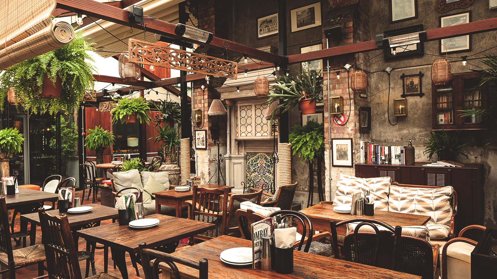

Dishoom is an unexpected gem located in the hearth of Shoreditch. As you step in, you will be immersed in the vibrant atmosphere
of Mumbai's old-Irani cafés. Dishoom brings a new take on Indian food and the Shoreditch branch does it in an outstanding setting.
Featuring a wide range of sharing plates, it is the perfect spot for a group of friends gathering to celebrate the Christmas
season.
